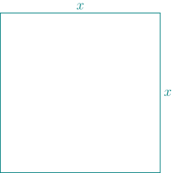
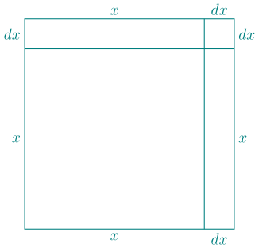
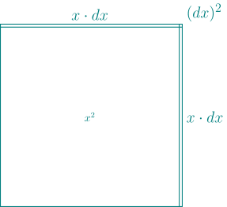

2.不同程度的微小
在学习微积分的过程中，会遇到各种不同程度的小量。
我们需要学会，在什么情况下可以认为小量已经微小到可以忽略不计。一切都取决于相对的微小程度。
在制定任何规则之前，先看一些熟悉的例子。
时间
一个小时有 60 分钟，一天有 24 小时，一周有 7 天。因此，一天有 1440 分钟，一周有 10080 分钟。
显然，一分钟与整个星期相比是非常短的时间。事实上，前人曾认为与一小时相比，一分钟很短，称之为“一分钟”（one minùte），意思是小时的六十分之一。当需要更小的时间单位时，将每一分钟分成 60 个更微小的部分，在伊丽莎白女王时代，这些微小部分被称为“秒钟”（second minùtes，即：第二级微小的数量）。如今，我们称这些二级微小的数量为“秒”(second)。这就是英文中 second 一词有一个含义是“秒”的来历。
如果一分钟和一整天相比已经很小了，那么一秒相比之下就更微不足道了！
钱
再比如，将一分钱与一元比较：一分钱只值一元的百分之一。对于一元来说，一分钱多一点或少一点几乎无关紧要；可以说是一个“小”数量。但如果将一分钱与一千元相比，相对于这笔更大的金额，一分钱的重要性不比一元中的千分之一更多。即使是一块金子，在一位千万富翁的财富中也是微不足道的。
数值
为了更容易指出量的微小程度，可以选定某个数值分数。例如，如果以时间来衡量，\(\frac{1}{60}\) 被称为一个“小”分数，那么 \(\frac{1}{60}\) 的 \(\frac{1}{60}\)（即一个小分数的小分数）可以被视为第二级小量。
或者，如果将 \(\frac{1}{100}\) 定为“小”分数，那么百分之一的百分之一（即：\(\frac{1}{10,000}\)）将是第二级小量的一个小分数；而 \(\frac{1}{1,000,000}\) 将是第三级小量的一个小分数，也就是百分之一的百分之一的百分之一。
忽略无限小的量
一个小量本身越小，相应的第二级小量就越可以忽略不计。因此我们知道，在所有情况下，只要第一级小量足够小，就能够合理地忽略第二级或第三级（或更高）的小量。
但是要记住，小量如果作为其他因子相乘的因素出现在表达式中，可能会变得重要，特别是当其他因子本身很大时。即使是几分钱，如果乘以几百也会变得重要。
在微积分中，我们用 \(dx\) 来表示 \(x\) 的一小部分。像 \(dx\)、\(du\) 和 \(dy\) 这样的东西被称为“微分”，分别表示 \(x\) 或 \(u\) 或 \(y\) 的微分。（可以读 dee-eks 、dee-you 或 dee-wy）。
如果 \(dx\) 是 \(x\) 的一小部分，且本身相对较小，并不意味着像 \(x \cdot dx\)、\(x^2 dx\) 或 \(a^x dx\) 这样的量可以忽略不计。但是 \(dx \times dx\) 会被忽略不计，因为它属于第二级小量。
举一个简单的例子说明
假设有一个函数：
如果 \(x\) 增加少量，得到 \(x + dx\)，其中 \(dx\) 是增长的增量。函数值变为
第二项 \(2x \cdot dx\) 是一阶变化，不可忽略。第三项 \((dx)^2\) 是关于 \(x\) 的变化量的平方，属于二阶小量，它是\(dx\) 的一小点，或 \(x\) 的一小点的一小点。
假设我们给这个微小的变化量取一个具体的值，例如 \(x\) 的 \(\frac{1}{60}\)，则：
第二项是 \(\frac{2}{60}x^2\)，第三项是 \(\frac{1}{3600}x^2\)。最后一项明显不如第二项重要。如果这个微小的变化量进一步取 \(x\) 的 \(\frac{1}{1000}\)，则第二项将是 \(\frac{2}{1000}x^2\)，而第三项仅是 \(\frac{1}{1,000,000}x^2\)。
通过几何图形更直观地展示这一点
画一个正方形（如图 1），边长代表 \(x\)。

现在假设这个正方形每边增加 \(dx\)。扩大的正方形由 4 部分组成
- 原来的 \(x^2\)；
- 顶部和右侧的两个矩形（每个面积为 \(x \cdot dx\)，合计 \(2x \cdot dx\)）；
- 右上角的小正方形 \((dx)^2\)。

在图2中，我们让 \(dx\) 占了 \(x\) 相当大一部分 -- 约 1/5。
如果取 \(dx\) 仅为 \(x\) 的 1/100（大约一支细笔画出的墨线厚度），则右上角的小正方形面积仅为 \(x^2\) 的 \(\frac{1}{10,000}\)，几乎看不见。
显然，如果 \(dx\) 本身足够小，\((dx)^2\) 可以忽略不计。
